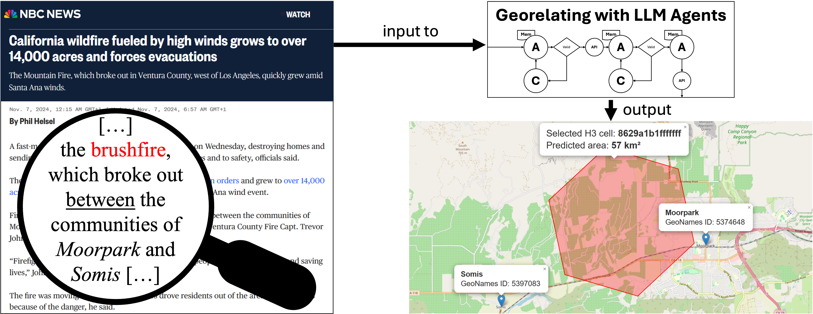

Beyond Geoparsing — Spatial Reasoning over Complex Locative Expressions with LLM Agents
1Leuphana University Lüneburg, Germany 2University of Hamburg, Germany

Accurately identifying disaster-affected areas is crucial for data-driven disaster resilience. In response, we introduce Georelating, a task that infers affected areas from textual reports containing complex locative expressions, moving beyond traditional geoparsing approaches that rely on explicit point locations. Georelating instead combines resolving unnamed regions and reasoning about spatial relations to represent event-affected areas within standardized Discrete Global Grid Systems (DGGSs).
We propose addressing Georelating with a pipeline capitalizing on the contextual understanding of large language model (LLM) agents to perform geospatial reasoning. Preliminary evaluation highlights the potential of this approach for the foundational geocoding stage and the novel Georelating task. We point out future paths for enhancing Georelating systems toward intuitive and efficient disaster information systems.
The increasing frequency and impact of natural disasters necessitate robust resilience strategies, prompting the development of national and international frameworks. A core aspect of these strategies involves geo-referencing damage information to facilitate disaster risk management. Natural language (NL) reports, such as news articles, provide timely insights into the impacts of global disasters — but effectively using this data requires addressing the challenges of spatially describing these disasters.
Current geoparsing approaches often rely on identifying place names (toponyms) and mapping them to geographic coordinates. However, natural disasters rarely conform to administrative boundaries, and NL reports frequently employ relational language to define affected areas. Furthermore, exhaustively listing all vulnerable entities in text is often impractical. Instead of directly identifying impacted entities, we propose inferring the area affected by a disaster from NL reports and integrating this information with existing geographic and demographic knowledge.
This work dissects the challenges of Georelating and explores the potential of large language models (LLMs) to address them, centering on two research questions:
For RQ1, we discuss the limitations of current geo-referencing tasks that match toponyms to known locations. Georelating requires inferring areas defined by relational language that lack explicit boundaries. We represent a disaster's impact area using DGGS cells and leverage complex locative expressions with landmarks as reference points and spatial relations leading to the report's trajector.
For RQ2, we propose and implement a reflective, LLM-driven multi-agent architecture comprising a dynamic memory module, actor and critic agents for reasoning and self-correction, a validation procedure, and an external environment grounded in the GeoNames gazetteer and the H3 DGGS API.
Consider the following example disaster report:
"Firefighters at the scene of the brush fire, which broke out between the communities of Moorpark and Somis, 'were faced with a tough firefight,' Ventura County Fire Capt. Trevor Johnson said."
Traditional geoparsing resolves toponyms such as "Moorpark," "Somis," and "Ventura" to point-based geographical database entries — the landmarks (blue markers in Figure 1). This fails to represent the extent of events like wildfires, i.e., the trajector. Georelating overcomes this by reasoning about spatial relations and context to represent unnamed impact areas.
The most relevant spatial relations for disaster reports are positional ones — particularly direction-based (e.g., cardinal direction "North," ternary relation "between") and distance-based (e.g., qualitative "near," quantitative "24 meters") calculi. Georelating becomes crucial for spatiotemporal events where positions evolve and are not readily available in gazetteers.
To represent such areas effectively, we propose using Discrete Global Grid Systems (DGGSs) — spatial indexing systems that partition Earth's surface into hierarchically organized, regularly tiling cells, each with a unique permanent identifier. DGGS representations facilitate scalable analysis, interoperability, cross-domain data integration with Geospatial Knowledge Graphs (GeoKGs), and intuitive visualization.
Georelating is the task of inferring the index of the smallest cell in a DGGS that fully encompasses the area affected by a distinct geospatial-temporal event, as described in an NL report.
Input:
Define: Let \( A \) be the affected area inferred from \( R \), and
$$\mathcal{C}_A = \{ c \in G_l \mid A \subseteq c \text{ for some } l \}$$be the set of all cells at any level \( l \) that completely cover \( A \).
Task: Select the minimally sized covering cell
$$c^* = \arg\min_{c \in \mathcal{C}_A} \text{size}(c) = \arg\max_{c \in \mathcal{C}_A} l(c)$$Output: The index of cell \( c^* \) in the DGGS.
The central innovation is to combine resolving toponyms as landmarks with reasoning about spatial relations and article context to determine the unnamed, impacted region. The DGGS approach provides efficient representation and facilitates GeoKG integration.
We present a reflective, LLM-based agentic architecture for Georelating, detailing its components, operations, and interplay.
Our architecture comprises four key components: LLM-driven language agents for reasoning and task execution, a hybrid memory for integrating relevant information, internal procedures for validation and coordination, and access to an external environment via APIs for geographical grounding.
We employ a hybrid memory consisting of short-term, long-term, and working memory. Short-term memory stores positive examples for few-shot learning and feedback on errors within the current execution cycle. Long-term memory contains procedural knowledge (code and agent prompts, implemented with LangChain) and semantic knowledge (detailed instructions and API documentation). Working memory is dynamically constructed, including the input report, system prompt, task instructions, and relevant examples retrieved via semantic (cosine) similarity between vector embeddings of the example and the input report.
Inspired by reinforcement learning, our architecture uses actor and critic agents. Actors solve Georelating sub-tasks; critics provide verbal error feedback for self-correction. LLMs are leveraged for both, capitalizing on their NL understanding for geospatial reasoning across text domains (news articles, social media). Actors and critics run as independent, stateless instances.
LLM outputs are first validated for syntax, then undergo deterministic coherence validation (e.g., verifying referenced toponyms). Errors trigger analysis and reflection by the critic agent. Actors ground decisions in accurate geographical knowledge via read-only access to the GeoNames gazetteer and the H3 DGGS API, preventing persistent state changes.
Three methods enhance performance throughout the pipeline: (I) instruction fine-tuned LLMs ensure task adherence; (II) few-shot learning provides contextual guidance; (III) the actor-critic framework enables iterative improvement — the critic analyzes unsuccessful generations and provides actionable feedback, and the actor's working memory is updated with this feedback and the current trajectory to facilitate task-specific learning. The model-independent design ensures compatibility with future LLMs.
The pipeline mirrors the structure of complex locative expressions: landmarks (toponyms) are resolved first, then spatial relations are reasoned over to locate the trajector. Based on the hypothesis that humans first identify landmarks and then reason about spatial relations, our pipeline consists of three steps:
Toponyms are extracted as a preliminary step using the widely adopted Stanza Named Entity Recognition pipeline before candidate generation begins.
We briefly evaluate our architecture on the foundational candidate generation and resolution stages using the established Local-Global Lexicon corpus (LGL) for robust comparisons with prior work. For a first approximation to Georelating, we employ GeoCoDe as the only dataset explicitly tailored to complex location descriptions and polygon annotations.
For actors and critics, we evaluate three LLMs: the small and fast LLaMA 3.1 8B Instruct (8b), the large LLaMA 3.3 70B Instruct (70b), and Mistral Large Instruct (123b).
Candidate generation is evaluated with Recall@\(k\) — the proportion of ground truth GeoNames IDs among the top-\(k\) retrieved candidates — reporting R@10 for comparability. Candidate resolution uses Accuracy@\(k\) (A@161) and AUC over the distribution of geodesic error distances. Georelating is evaluated using areal \(\text{F}_1\) — the harmonic mean of precision and recall over the overlap of predicted and ground truth polygons.
| Actor | Critic | R@10 ↑ | A@161 ↑ | AUC ↓ |
|---|---|---|---|---|
| 8b | — | 0.682 | 0.825 | 0.103 |
| 8b | 8b | 0.767 | 0.825 | 0.101 |
| 8b | 123b | 0.775 | 0.837 | 0.102 |
| 70b | 123b | 0.873 | 0.862 | 0.073 |
| State of the Art | 0.759 | 0.906 | 0.109 | |
All critics consistently improve R@10. The 8b + 8b pair already surpasses recent transformer-based models. The 70b + 123b combination achieves the best results across all metrics, with A@161 = 0.862 approaching the state-of-the-art 0.906, and AUC = 0.073 substantially improving upon the previously best reported 0.109. At least one toponym is resolved within 161 km in 92% of all articles, supporting general event localization.
| Model | A@161 ↑ | AUC ↓ | Areal F₁ ↑ |
|---|---|---|---|
| 70b + 123b | 1.000 | 0.213 | 0.170 |
The 70b model achieves perfect A@161 and low AUC on GeoCoDe, demonstrating strong spatial localization. The areal F₁ = 0.170 reflects the increased complexity of Georelating: the model substantially underestimates the area of described geographical units. Note that GeoCoDe contains named regions with fixed bounds, contrasting the goal of Georelating to resolve unnamed, evolving borders, which limits the explanatory power of these results.
Our reflective, LLM-driven agent architecture mirrors the structure of locative expressions by resolving toponyms before reasoning geospatially to approximate the extent and location of areas. Achieving geocoding performance comparable to specialized models on LGL news articles without fine-tuning on labeled data, it still requires further evaluation regarding the critic's influence and various LLMs.
The low areal F₁ highlights the increased complexity of the new Georelating task, though the explanatory power of these results is limited. GeoCoDe only contains named regions with fixed bounds, contrasting the goal of Georelating to resolve unnamed, evolving borders. Its polygon annotations also do not match the task definition's cell-based representation. We will therefore work on a new dataset of disaster reports containing relational geospatial descriptions annotated with DGGS identifiers, alongside tailored evaluation metrics capitalizing on the efficient DGGS grid hierarchy and traversal functions.
A current limitation is representing elongated areas with a single DGGS cell. We maintain, however, that DGGSs' representational and integrative advantages outweigh these drawbacks, and encourage future work on extending Georelating to multiple cells for more nuanced area resolution.
Because our method relies on textual descriptions, it is inherently bound by the precision of available sources. Nonetheless, textual information is abundant, making it practical for comprehensive and rapid disaster assessments. Future work could consider GeoAI methods to learn spatial representations directly from NL text, requiring geospatial reasoning for interpretation.
We proposed Georelating — inferring the smallest DGGS cell fully encompassing the area affected by a geospatial-temporal event from NL reports, requiring the interpretation of spatial relations. By representing outputs as DGGS cells, Georelating enables integration with information stored in Geospatial Knowledge Graphs. We proposed an LLM agent architecture grounded in geographical knowledge, demonstrating highly competitive performance on geocoding foundational to Georelating. The system further shows its potential in geospatial reasoning to resolve regions.
We envision Georelating systems as a step toward intuitive disaster information systems that aggregate global event data, ultimately strengthening societal resilience.
If you find this work useful, please cite:
@inproceedings{moltzen2025georelating,
author = {Moltzen, Kai and Huang, Junbo and Usbeck, Ricardo},
title = {LLM Agents for Georelating - A New Task for Locating Events},
booktitle = {Proceedings of the 33rd ACM SIGSPATIAL International Conference
on Advances in Geographic Information Systems},
year = {2025},
publisher = {ACM},
url = {https://github.com/semantic-systems/SIGSPATIAL2025-Georelating}
}